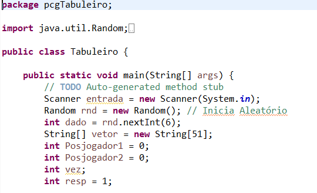
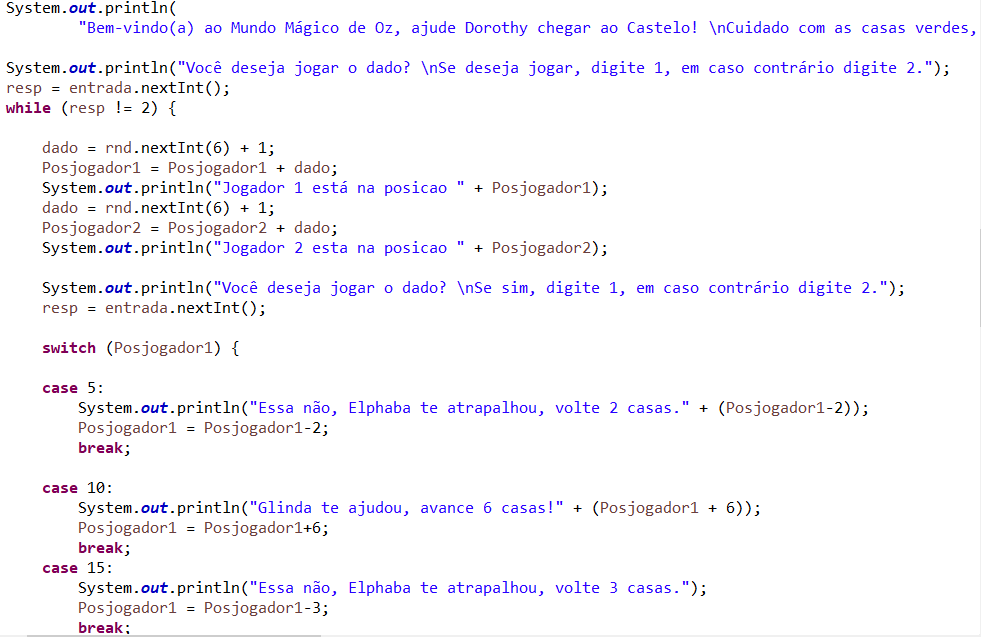
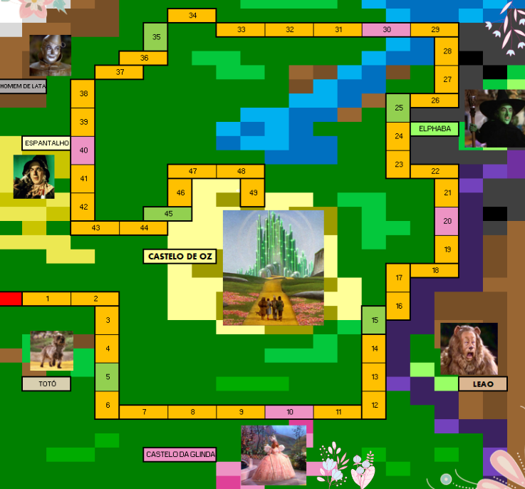
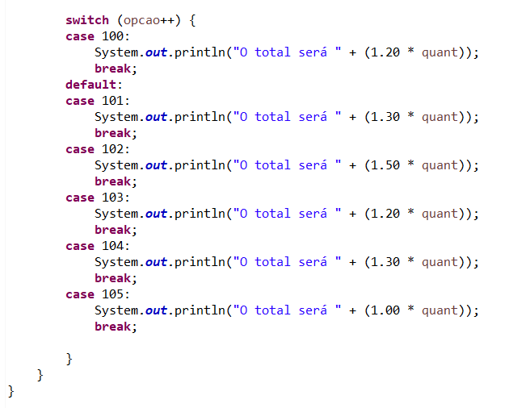
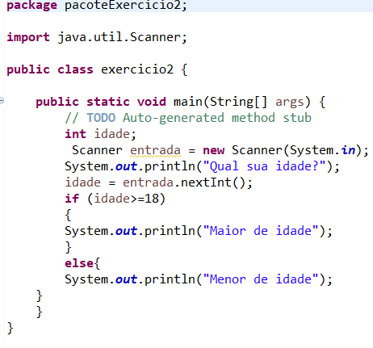
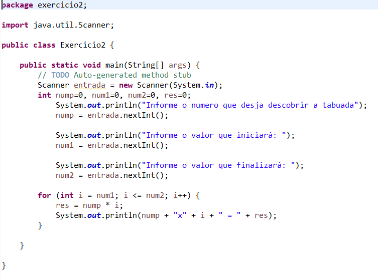
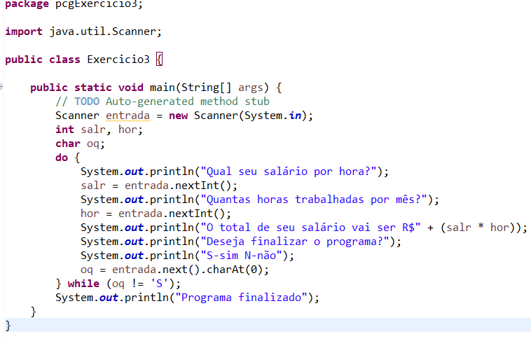
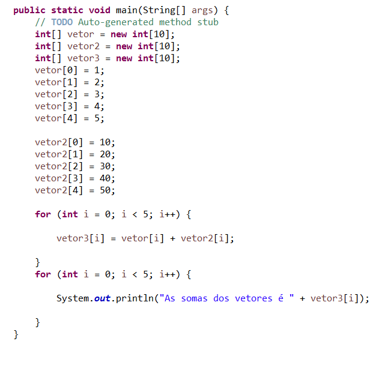
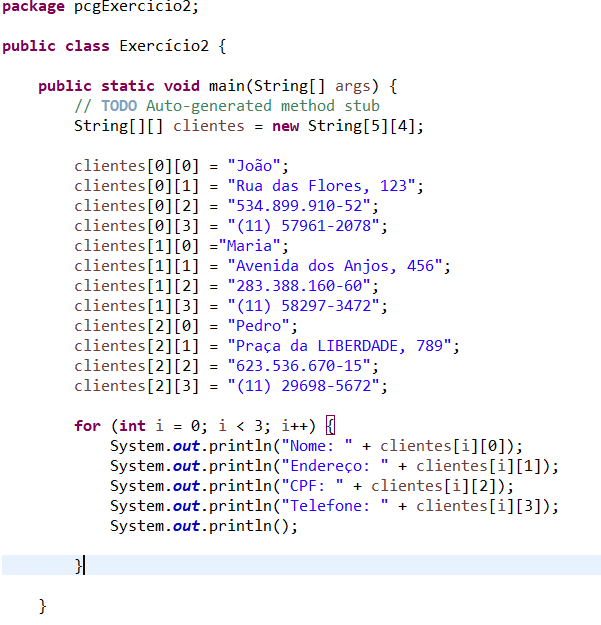

Fizemos um projeto nesse semestre que se resumia em fazer um jogo de tabuleiro com os comandos aprendidos durante o curso. Meu grupo fez um tabuleiro baseado na obra O mágico de Oz.
Nessa imagem podemos observar as variáveis utilizadas no código do projeto.
Nessa outra, observamos um pouco do restante do código.
Aqui, podemos ver o nosso protótipo.😁
A condicional switch avalia uma expressão, combinando o valor da expressão para um cláusula case, e executa as instruções associadas ao case. Basicamente, ele fornece um mecanismo para substituir as estruturas que usam if-else aninhados por uma estrutura mais limpa e objetiva.
A condicional if é uma estrutura de condição que executa o comando, se tal condição for verdadeira. Se for falsa, executa os comandos dentro de else.
O for é uma estrutura de repetição. Ele é usado para realizar um mesmo processo diversas vezes e o loop de comandos é programada para voltar ao seu ponto de origem assim que completada.
Do/while também é uma estrutura de repetição, ele funciona de forma similar como o While. Com esse iterador, fazemos uma laço de repetição que antes de verificar se o laço deve ser ou não repetido, como tinhamos com o laço WHILE, primeiro executa o bloco de instrução.
Vetores são estruturas de dados que armazenam usualmente uma quantidade fixa de dados de um certo tipo.
Uma matriz é um vetor de vetores, todos de mesmo tamanho. Em Java, é possível criar um vetor de vetores onde cada elemento tem um tamanho diferente. Nesse caso, cada elemento deve ser criado de forma independente.
